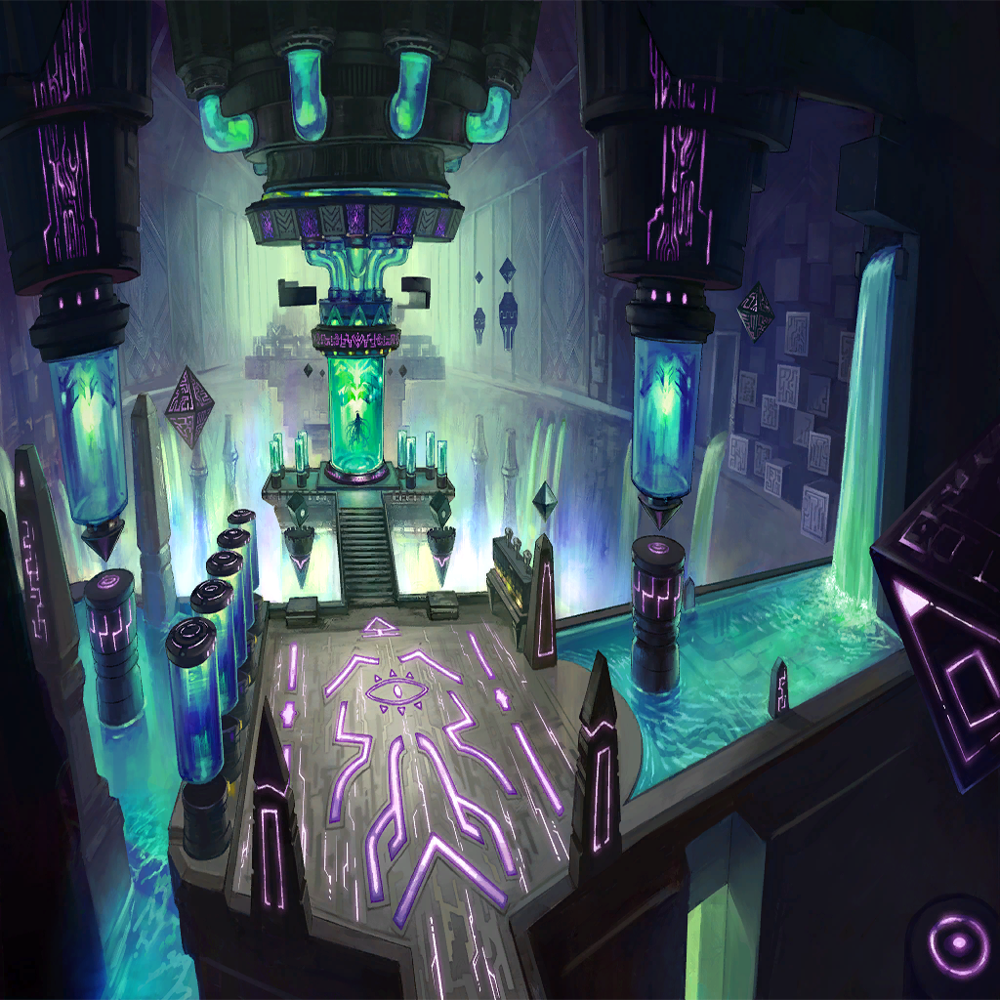

Waginau
Waginau
Waginau
Waginau
| |
| |
| Lil' | Hahaha! Zafeiris! Over here! |
| Zafeiris | Calm down, now! You're liable to trip and fall. |
| Lil' | But I can fly! So even if I do, I won't get hurt. |
| Zafeiris | R-right... Still, you should be more careful! Especially with your powers. |
| Zafeiris | Your powers are closely tied to the Shell of the World. Enough recklessness and you easily could get hurt! |
| Lil' | I...don't understand. |
|  | |
| Zafeiris | Ugh. How do I explain it in simpler terms? |
| Zafeiris | A dragon would have been born with a fully developed mind... |
| Zafeiris | This is as though I'm speaking with one of those human younglings my brother Nidhogg described to me once. |
| Schmeier | So, how's fatherhood going? |
| Zafeiris | Tell me, why did you leave her intellectual maturity underdeveloped as you were creating her? |
| Zafeiris | Were you not the one who said she needs an adequately functioning intellect for us to converse with her? |
| Schmeier | That's true. I did say that. |
| Schmeier | What I need you to understand, Zafeiris, is that I don't exactly hold our intelligence as dragons to be quite so sacred or righteous, as you do. |
| Schmeier | We've made mistakes. We've done many, many things we shouldn't have, and lost much as a result of it. |
| Schmeier | I want her to take a different path than the one we took. I want her to learn things properly. |
| Schmeier | I want her to learn on her own about this world, about us dragons, and about the humans who will replace us. |
| Zafeiris | Such optimistic idealism... |
| Schmeier | I thought you'd approve. |
| Zafeiris | ... |
| Schmeier | There you go again, giving the silent treatment when things don't quite go your way. You really do need to work on that nasty habit of yours! |
| Schmeier | We wouldn't want Lil to pick up such tendencies, now, would we? |
| Lil' | Did somebody call me? |
| Schmeier | Why, yes, we did! Zafeiris and I were just talking about how beautiful you are, Lil. You're just far too cute! |
| Lil' | Heheh! Lil is Schmeier's masterpiece, right? Of course I'm cute! |
| Schmeier | Oh, you little scamp. C'mere! |
| Lil' | Ahahaha! That tickles! |
| Zafeiris | (How long is this pathetic farce supposed to continue?) |
| Zafeiris | (This was supposed to be a means for us to contact and converse with our environmental maintenance system, the Shell of the World, to help address the issues it's been experiencing.) |
| Zafeiris | (So then why is Schmeier even—?) |
| Lil' | Zafeiris! |
| Zafeiris | Yes? |
| Lil' | Nng! Up! |
| Zafeiris | What is it? If you want something from me, use your words. |
| Schmeier | Are you daft?! Pick her up, Zafeiris! |
| Zafeiris | Me? Why don't you do it? |
| Lil' | Schmeier did already! Now it's Zafeiris' turn! |
| Zafeiris | ... |
| Schmeier | Oh, don't be such a sourpuss. You should appreciate her affection while you still can! |
| Lil' | Up! Up! |
| Zafeiris | All right, fine! |
| Lil' | Heehee! |
| |
| Zafeiris | A considerable time passed in this manner, with our research remaining stagnant throughout. How could any progress be made under such absurd circumstances, after all? |
Waginau |
So, this is your past? |
Waginau |
It seems far more...tranquil...than I expected. |
Waginau |
I am curious about several details, though—particularly how that little girl factors into everything. |
| Zafeiris | That should be apparent. But if it's not, it will be soon. |
Waginau |
What do you mean? |
| Zafeiris | We dragons are fated to perish. That fact hasn't changed, even through all this. |
| |
| Zafeiris | Curse you, Schmeier, for leaving all the material collection duties to me! |
| Zafeiris | Though she is the central constituent in charge of research. I suppose I've done all that I can do. |
| I don't think I'm ready... | |
| Zafeiris | Lil's development is progressing well. It won't be long before we are granted full access to the Shell of— |
| Do I want this to end? Peace, a supportive confidant, and a child who shows me affection... | |
| Perhaps this homely lifestyle has affected me more than I realize. The more I think about it— | |
| Zafeiris | Who are you? |
| The Nameless Dragon | Forgive our transgressions, Lord Zafeiris—incarnation of the seven miracles; our greatest, our savior! |
| Zafeiris | Do spare me the disingenuous sniveling and tell me why you've come. |
| The Nameless Dragon | This is for the world. Our chief, Lord Ophioneus, has declared it to be necessary. |
| The Nameless Dragon | In his words, the Shell of the World must be eliminated, and it is time that we dragons overcome this trial as one. |
| Zafeiris | Ophioneus said that? |
| The Nameless Dragon | As such, those who would protect the Shell of the World are to be regarded as impediments toward that noble goal. |
| The Nameless Dragon | And none are more guilty of acting in defense of the Shell than you and Schmeier. |
| Zafeiris | It's almost astonishing to see so many of our kin, so near extinction, gathered in one place. |
| The Nameless Dragon | Please understand that the circumstances call for such measures. |
| The Nameless Dragon | Melvillei of Compassion has seen the end of this world. We haven't a moment to spare! |
| Zafeiris | Do you think mentioning such an honored name alone can convince me to just step back and allow you to usher in our demise?! |
| The Nameless Dragon | Clearly not. You are among the most stalwart of us dragons. We will do what we must. |
| Zafeiris | So be it. Come, then! |